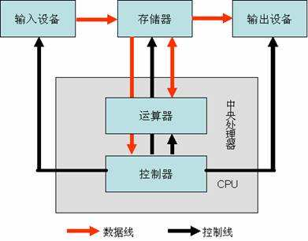

计算机系统组成
计算机系统由硬件 计算机系统由硬件(Hardware) 系统和软件(Software)系统两大部分组成

计算机的功能：
- 把需要的程序和数据送至计算机中。
- 必须具有长期记忆程序、数据、中间结果及最终运算结果的能力。
- 能够完成各种算术、逻辑运算和数据传送等数据加工处理的能力。
- 能够根据需要控制程序走向，并能根据指令控制机器的各部件协调操作。
- 能够按照要求将处理结果输出给用户。
冯诺依曼体系的五大基本部件：

- 运算器：用于完成各种算术运算、逻辑运算和数据传送等数据加工处理。
- 控制器：用于控制程序的执行，是计算机的大脑。
- 存储器：用于记忆程序和数据。分为只读存储器和随机存储器
- 输入设备：用于将数据或程序输入到计算机中，例如：鼠标、键盘。
- 输出设备：将数据或程序的处理结果展示给用户，例如：显示器、打印机。